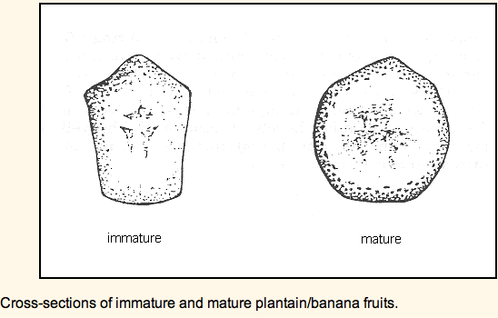

HORT 381 :: Lecture 04 :: FACTORS AFFECTING RIPENING

Factors affecting ripening can be physiological, physical, or biotic.
Physiological factors relate to fruit maturity or environmental factors, which affect the metabolism of fruit and banana.
Physical factors include mechanical damage, or relate to dimensions of the fruit.
Biotic factors include attack from pests and diseases.
Fruit maturity. The more mature fruit is at harvest, the shorter the ripening period. Studies show that banana harvested 100 days after flowering ripened in 11 days. When the same cultivar was harvested 90 days after flowering, the ripening period increased to 15 days, and further increased to 22 days when the fruit was harvested at 80 days. Farmers have to match the date of harvest with the transportation time to the market. However, an early harvest reduces yield.

As fruits mature, the cross-sectional diameter increases. Fruit angularity also changes during growth and maturation. As fruits approach full maturity, fruit angles become less acute Fruit angularity can be used to predict the optimum harvest date of banana.
Temperature. Physiological studies on bananas show that storage life decreases as external temperature increases over the range 15-35ºC. A 1ºC reduction increases storage period by 1-2 days.
The relationship between ripening period and temperature is due to fruit respiration. Fruit respiration depends on many enzymatic reactions, and the rate of these reactions increases exponentially with increase in temperature. Studies show that ripe fruits respire at approximately 4 times the rate of unripe fruits. Consequently, ripe fruits lose sugar resources at a higher rate than unripe fruits. This explains why ripe fruits deteriorate quickly.
The relationship between temperature and respiration is described mathematically by van't Hoff's temperature quotient (Q10). van't Hoff showed that the rate of respiration approximately doubles for each 10ºC rise in temperature.
Water loss and humidity. Where fruit is sold on a weight basis, loss of water means economic loss. Additionally, water loss reduces visual quality. Water loss causes fruit to lose its firmness, the peel becomes soft and shriveled, and ripening period reduces. Studies on fruits show a curvilinear or power relationship between fruit weight loss and ripening period. For a 2% change from 2% to 4% weight loss per day, ripening period reduced by 9 days or 50%. Therefore, at a low rate of weight loss, a small increase in weight loss has a critical effect on ripening.
The rate of water loss depends on the ambient relative humidity (RH). RH is the amount of water vapor present in the air, relative to the maximum amount of water vapor that can be held in the air, at a given temperature, saturated air being 100% RH. When a water-containing material such as fruit is placed in an enclosed space, for example, a sealed container, the water content of the air within the container increases or decreases until it is in equilibrium with the fruit.
The water equilibrium principle applies when fruit is stored. The rate of water loss depends on the ambient RH. At an ambient RH of 95-100%, fruit loses little or no moisture, and ripening period is unaffected. However, as humidity decreases, the rate of water loss increases, and ripening period reduces.
Excessive wetting can also be a problem. When fruit is stored in wet conditions, such as in moist coir (coconut fiber), the uptake of water from the coir to the fruit leads to peel splitting.
Sunlight. Exposure to direct sunlight reduces the ripening period of fruits. Sunlight increases fruit temperature above ambient temperature, which increases respiration, and possibly the rate of water loss. The solar radiation that falls upon foods held in direct sunlight increases the temperature above the ambient temperature. The amount of increase in temperature depends on the intensity of the radiation, the size and shape of the food' and the duration of exposure to the direct rays of the sun. The intensity of solar radiation depends upon latitude, altitude, season of the year, time of day, and degree of cloud cover.
Altitude. Within a given latitude the prevailing temperature is dependent upon the elevation when other factors are equal. There is on the average a drop in temperature of 6.5°C for each Km increase in elevation above sea level. Storing food at high altitudes will therefore tend to increase the storage life and decrease the losses in food provided it is kept out of the direct rays of the sun.
Atmosphere. The normal atmosphere contains by volume, approximately 78% nitrogen, 21% oxygen, 1% argon, 0.03% carbon dioxide' various amounts of water vapor and traces of inert gases. Modifying the atmosphere can improve the shelf life and reduce wastage of certain foods.
One type of controlled atmosphere storage (CA) is refrigerated storage in which the level of oxygen is reduced to about 3% with the carbon dioxide content being raised to 1 to 5%, depending on the commodity. This CA storage may double the storage life over that of regular cold storage for certain varieties of apples and pears by slowing down the natural rate of respiration.
Ethylene (C2H4) is a gaseous plant hormone which determines the time between harvest and senescence. The time from harvest to the climacteric respiratory response is called the 'green life' or preclimacteric period. Ethylene shortens the preclimacteric period; at high concentrations, ethylene causes rapid initiation of the climacteric respiratory response and accelerates ripening.
When nonclimacteric fruits are exposed to ethylene, fruits show an increased rate of respiration. However, respiration rate falls when ethylene is removed. A rise in respiration rate may occur more than once in nonclimacteric fruits. However, for climacteric fruits, the climacteric is autocatalytic, that is, once started, the process cannot be stopped until the fruit is ripe.
Poor storage methods allow a build up of ethylene, stimulate the climacteric response, and reduce the ripening period. For example, plastic sheets placed over stacks of fruit for shade increase the level of ethylene within the fruit stack and increase the rate of ripening. Therefore, store fruit in thatched or ventilated areas to prevent the build up of ethylene. Also, do not store unripe fruits with ripe fruits.
During the preclimacteric period, fruits are less susceptible to physical damage and pathological attack. This is the best time for handling, transportation, and marketing.
Mechanical damage. Mechanical damage is a physical factor affecting ripening. Fruit damage during handling generates ethylene. If ethylene production is sufficient to start the climacteric respiratory response, fruit immediately starts to ripen.
Damage can also reduce ripening period by causing moisture loss. The effect of damage can easily be measured by recording fruit weight loss over time. Cuts and abrasions on the surface membrane cause the most weight loss.
After harvest, fruits lose the ability to repair ruptured peel. Harvesting techniques which damage fruit reduce storability.
Studies show that an abrasion affecting 5-10% of the peel can reduce the ripening period by 40%. Damage can also lead to secondary infection, which increases the rate of water loss and further reduces quality.
Surface to volume ratio. The ratio between surface area and volume determines the rate of water loss. The greater the surface to volume ratio, the shorter the postharvest life. A leaf which has two large surfaces with little volume loses moisture faster than a fruit. Large fruits lose less water than small fruits.
Peel thickness. Fruits with thin peel lose more water. A higher peel permeability leads to a higher rate of water loss and a faster ripening rate. Also, fruits with thick peel, for example melons, withstand damage better than fruits with thin peel, such as tomatoes.
Stomatal density. A higher density of stomata may cause a higher rate of water loss, which accelerates ripening.
Biotic stress. Fungi, bacteria, viruses, and insects also account for a considerable proportion of total postharvest loss. Pests and diseases reduce both ripening period and overall quality. However, attack by pests and diseases is often secondary because a pest exploits a damaged area of the fruit. Careful fruit handling often prevents such attacks.
| Download this lecture as PDF here |